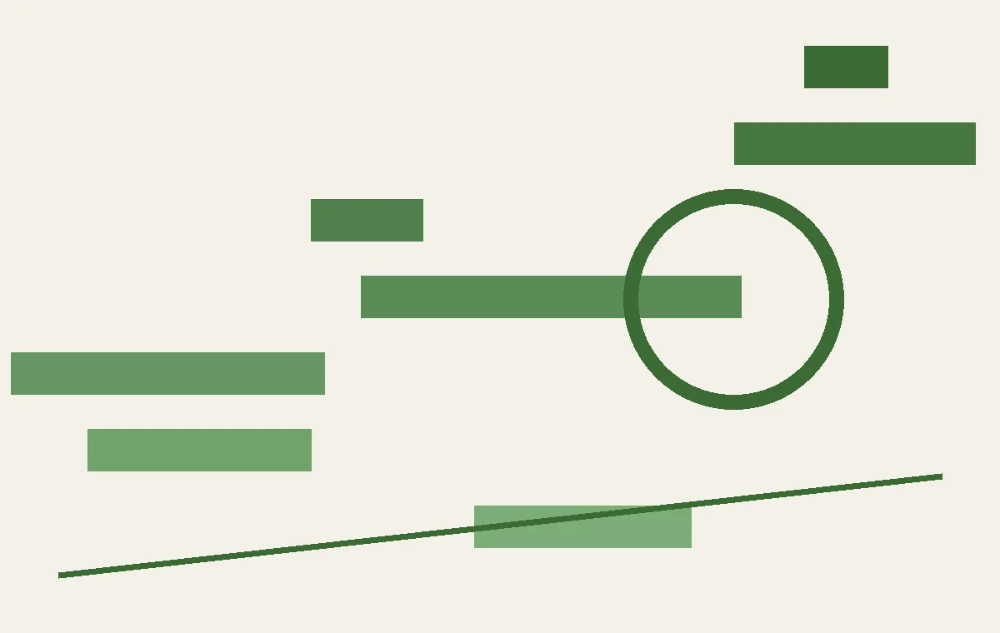

伊恩每日·科技：2026年7月23日
Yope获千万美元融资做无算法社交、AMD豪掷50亿美元绑定Anthropic、三星智能眼镜真容曝光、IBM财报不及预期但坚称AI不杀大型机、AI创业者的新法则。本期从Yope的微社区切入，串联产业趋势，并穿插听众问答与跨事件复盘。
把每天真正值得理解的事情，写成可以慢慢读的文章，也做成可以随时听的播客。
Yope获千万美元融资做无算法社交、AMD豪掷50亿美元绑定Anthropic、三星智能眼镜真容曝光、IBM财报不及预期但坚称AI不杀大型机、AI创业者的新法则。本期从Yope的微社区切入，串联产业趋势，并穿插听众问答与跨事件复盘。

从一项关于入学延迟对儿童执行功能影响的研究出发，串联美国特朗普账户计划、密西西比跨性别学生毕业礼、老挝校友重返校园等事件，探讨教育公平的多重维度。

今日节目覆盖CBA转会动态、流浪者主帅禁赛风波、The Hundred板球神级接杀，结合听众提问，分析体育规则、战术与人的表现。